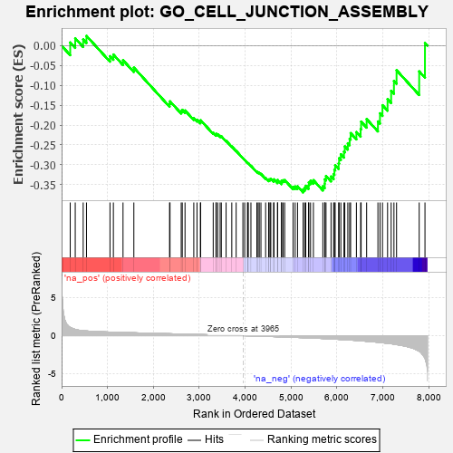
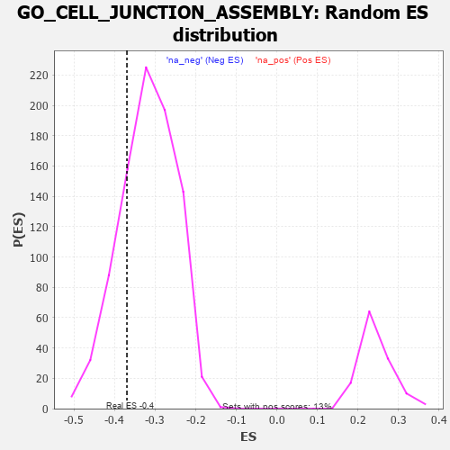

| | | Dataset | 7d |
| Phenotype | NoPhenotypeAvailable |
| Upregulated in class | na_neg |
| GeneSet | GO_CELL_JUNCTION_ASSEMBLY |
| Enrichment Score (ES) | -0.36969247 |
| Normalized Enrichment Score (NES) | -1.1616626 |
| Nominal p-value | 0.21649484 |
| FDR q-value | 0.6783398 |
| FWER p-Value | 1.0 |
Table: GSEA Results Summary

Fig 1: Enrichment plot: GO_CELL_JUNCTION_ASSEMBLY
Profile of the Running ES Score & Positions of GeneSet Members on the Rank Ordered List
| PROBE | GENE SYMBOL | GENE_TITLE | RANK IN GENE LIST | RANK METRIC SCORE | RUNNING ES | CORE ENRICHMENT | | 1 | DNER | | | 188 | 1.098 | 0.0082 | No |
| 2 | FSCN1 | | | 297 | 0.830 | 0.0187 | No |
| 3 | LRP1 | | | 470 | 0.648 | 0.0158 | No |
| 4 | SRF | | | 542 | 0.615 | 0.0247 | No |
| 5 | MEF2C | | | 1054 | 0.473 | -0.0263 | No |
| 6 | SRC | | | 1128 | 0.459 | -0.0222 | No |
| 7 | TBCD | | | 1338 | 0.422 | -0.0364 | No |
| 8 | FZD1 | | | 1574 | 0.379 | -0.0552 | No |
| 9 | BCAS3 | | | 2352 | 0.253 | -0.1463 | No |
| 10 | MPP5 | | | 2362 | 0.251 | -0.1402 | No |
| 11 | MPP7 | | | 2606 | 0.211 | -0.1648 | No |
| 12 | GNPAT | | | 2629 | 0.208 | -0.1615 | No |
| 13 | DSCAM | | | 2689 | 0.200 | -0.1632 | No |
| 14 | DAPK3 | | | 2880 | 0.169 | -0.1823 | No |
| 15 | RAB17 | | | 2950 | 0.157 | -0.1865 | No |
| 16 | WNT4 | | | 3023 | 0.146 | -0.1914 | No |
| 17 | TLN1 | | | 3030 | 0.145 | -0.1879 | No |
| 18 | SMAD3 | | | 3303 | 0.105 | -0.2193 | No |
| 19 | FMN1 | | | 3363 | 0.095 | -0.2241 | No |
| 20 | SMAD7 | | | 3369 | 0.093 | -0.2220 | No |
| 21 | TESK2 | | | 3401 | 0.089 | -0.2233 | No |
| 22 | PTPRK | | | 3454 | 0.084 | -0.2275 | No |
| 23 | CDK5 | | | 3480 | 0.080 | -0.2283 | No |
| 24 | PARD3 | | | 3584 | 0.063 | -0.2395 | No |
| 25 | FLNC | | | 3708 | 0.041 | -0.2539 | No |
| 26 | VMP1 | | | 3803 | 0.027 | -0.2651 | No |
| 27 | GPC6 | | | 3950 | 0.002 | -0.2835 | No |
| 28 | VPS35 | | | 3989 | -0.006 | -0.2882 | No |
| 29 | ACTN1 | | | 4050 | -0.016 | -0.2953 | No |
| 30 | PKN2 | | | 4060 | -0.017 | -0.2960 | No |
| 31 | ROBO2 | | | 4066 | -0.018 | -0.2961 | No |
| 32 | ABL1 | | | 4125 | -0.027 | -0.3026 | No |
| 33 | ARL2 | | | 4254 | -0.050 | -0.3174 | No |
| 34 | WNT11 | | | 4282 | -0.056 | -0.3192 | No |
| 35 | STRN | | | 4307 | -0.060 | -0.3205 | No |
| 36 | SETD5 | | | 4343 | -0.067 | -0.3230 | No |
| 37 | LAMC1 | | | 4445 | -0.084 | -0.3333 | No |
| 38 | ILK | | | 4510 | -0.096 | -0.3386 | No |
| 39 | NPTN | | | 4519 | -0.098 | -0.3368 | No |
| 40 | NTRK2 | | | 4543 | -0.104 | -0.3367 | No |
| 41 | APC | | | 4558 | -0.107 | -0.3353 | No |
| 42 | DLG5 | | | 4619 | -0.121 | -0.3394 | No |
| 43 | SDK1 | | | 4627 | -0.124 | -0.3367 | No |
| 44 | ARF6 | | | 4704 | -0.140 | -0.3423 | No |
| 45 | RAP1B | | | 4706 | -0.140 | -0.3383 | No |
| 46 | CD151 | | | 4791 | -0.156 | -0.3444 | No |
| 47 | PCLO | | | 4793 | -0.156 | -0.3400 | No |
| 48 | WDR1 | | | 4824 | -0.163 | -0.3391 | No |
| 49 | DLG1 | | | 4860 | -0.169 | -0.3386 | No |
| 50 | PDPK1 | | | 5043 | -0.207 | -0.3556 | No |
| 51 | DRD2 | | | 5088 | -0.221 | -0.3547 | No |
| 52 | FLCN | | | 5140 | -0.235 | -0.3543 | No |
| 53 | PTEN | | | 5262 | -0.261 | -0.3621 | Yes |
| 54 | MAGI2 | | | 5295 | -0.269 | -0.3583 | Yes |
| 55 | CD9 | | | 5319 | -0.277 | -0.3531 | Yes |
| 56 | GRIN1 | | | 5381 | -0.291 | -0.3524 | Yes |
| 57 | FZD5 | | | 5386 | -0.292 | -0.3443 | Yes |
| 58 | MDGA1 | | | 5424 | -0.301 | -0.3403 | Yes |
| 59 | ACTN3 | | | 5486 | -0.315 | -0.3388 | Yes |
| 60 | LRRC4 | | | 5692 | -0.371 | -0.3540 | Yes |
| 61 | LRFN4 | | | 5733 | -0.387 | -0.3478 | Yes |
| 62 | SLIT1 | | | 5735 | -0.387 | -0.3366 | Yes |
| 63 | TLR2 | | | 5761 | -0.395 | -0.3283 | Yes |
| 64 | RAB13 | | | 5870 | -0.425 | -0.3296 | Yes |
| 65 | LRFN1 | | | 5926 | -0.443 | -0.3236 | Yes |
| 66 | LDB1 | | | 5944 | -0.451 | -0.3126 | Yes |
| 67 | ACTN2 | | | 5960 | -0.458 | -0.3011 | Yes |
| 68 | RAC1 | | | 6036 | -0.484 | -0.2965 | Yes |
| 69 | ADD2 | | | 6046 | -0.487 | -0.2835 | Yes |
| 70 | DBNL | | | 6084 | -0.501 | -0.2736 | Yes |
| 71 | ROCK1 | | | 6152 | -0.520 | -0.2669 | Yes |
| 72 | GRID2 | | | 6170 | -0.528 | -0.2536 | Yes |
| 73 | CDC42 | | | 6236 | -0.548 | -0.2459 | Yes |
| 74 | FLOT1 | | | 6276 | -0.564 | -0.2344 | Yes |
| 75 | TLN2 | | | 6297 | -0.574 | -0.2202 | Yes |
| 76 | PTPRD | | | 6423 | -0.629 | -0.2177 | Yes |
| 77 | TRPV4 | | | 6515 | -0.668 | -0.2097 | Yes |
| 78 | ACE | | | 6526 | -0.674 | -0.1914 | Yes |
| 79 | PTPRS | | | 6646 | -0.738 | -0.1849 | Yes |
| 80 | PLEC | | | 6892 | -0.864 | -0.1908 | Yes |
| 81 | GHSR | | | 6937 | -0.894 | -0.1703 | Yes |
| 82 | NPHP4 | | | 6991 | -0.931 | -0.1499 | Yes |
| 83 | RYK | | | 7102 | -1.000 | -0.1346 | Yes |
| 84 | PTPRJ | | | 7180 | -1.054 | -0.1136 | Yes |
| 85 | FBF1 | | | 7241 | -1.111 | -0.0888 | Yes |
| 86 | ANK2 | | | 7298 | -1.170 | -0.0618 | Yes |
| 87 | NPHP1 | | | 7791 | -2.041 | -0.0647 | Yes |
| 88 | ASIC2 | | | 7917 | -2.995 | 0.0068 | Yes |
Table: GSEA details [plain text format]

Fig 2: GO_CELL_JUNCTION_ASSEMBLY: Random ES distribution
Gene set null distribution of ES for GO_CELL_JUNCTION_ASSEMBLY